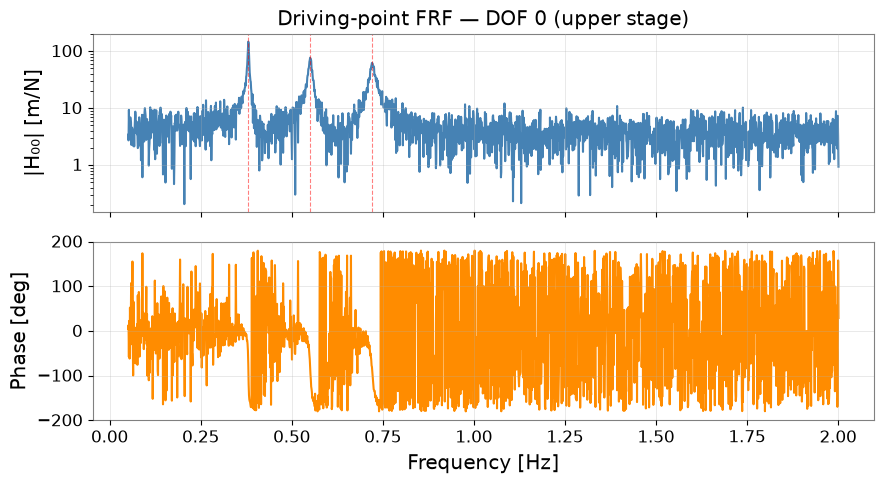
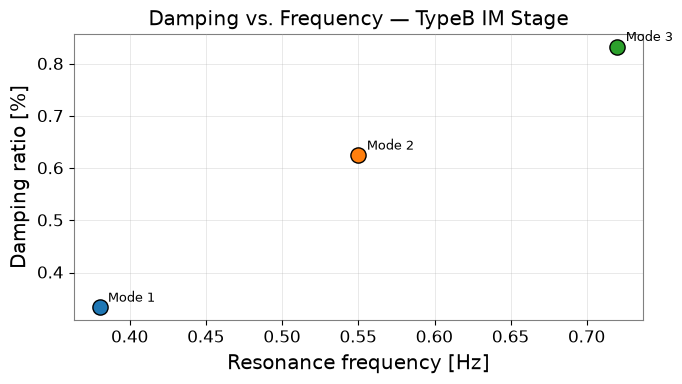

Note
このページは Jupyter Notebook から生成されました。 ノートブックをダウンロード (.ipynb)
[ ]:
# Install gwexpy with pinned versions of core dependencies for reproducibility on Colab
%pip install -q "gwexpy[all]" "gwpy<5.0.0" "numpy<2.0.0" "scipy<1.13.0" "astropy<7.0.0"
懸架系の高精度モーダル解析
運用モーダル解析（OMA: Operational Modal Analysis） は、既知の 励振力なしに振動データから共振周波数、減衰比、モード形状を抽出する手法です。 KAGRA の懸架系（TypeA、TypeB、TypeBp）の固有振動モード同定に使われています。
このチュートリアルで学ぶこと：
多自由度 FRF（周波数応答関数）行列の合成
pyOMA を使った OMA 実行（未インストール時は解析的フォールバック）
FrequencySeries.from_pyoma_results()で gwexpy に変換するモード形状・減衰比の可視化と FRF 再構成
注意: このノートブックは自己完結しています。pyOMA が未インストール でもすべてのセルを実行できます。
pip install pyOMAで実際の OMA を使用できます。
``case_violin_mode.ipynb`` との違い： バイオリンモードチュートリアルは 単一チャネルのスペクトルピークフィッティングに特化しています。 本チュートリアルは多チャネル FRF 行列と完全なモード形状抽出を扱い、 作動行列較正（MODAL2COIL マトリクス）や能動制振フィルタ設計の基礎になります。
セットアップ
[1]:
import warnings
warnings.filterwarnings("ignore", category=UserWarning)
warnings.filterwarnings("ignore", category=DeprecationWarning)
import numpy as np
import matplotlib.pyplot as plt
import pandas as pd
from gwexpy.frequencyseries import FrequencySeries, FrequencySeriesMatrix
from gwexpy.interop._modal_helpers import build_mode_dataframe, build_frf_matrix
1. 合成多自由度 FRF 行列
3 自由度チェーン懸架系（KAGRA TypeB 中間質量ステージの簡略モデル）を シミュレートします。FRF 行列 H[i,j](f) は DOF j への力に対する DOF i の応答を表します。
[2]:
fs = 100.0
f_modes = [0.38, 0.55, 0.72] # 共振周波数 [Hz]
Q_modes = [150.0, 80.0, 60.0] # Q 値
n_dof = 3
freqs = np.linspace(0.05, 2.0, 2000)
def single_dof_frf(f, f0, Q):
r = f / f0
return 1.0 / (1 - r**2 + 1j * r / Q)
# モード形状行列（列 = モード、行 = DOF）
Phi = np.array([
[ 1.00, 1.00, 1.00], # DOF 0 (上部ステージ)
[ 0.62, -0.38, 0.85], # DOF 1 (中間ステージ)
[ 0.35, -0.72, -1.20], # DOF 2 (ミラー)
])
n_freq = len(freqs)
frf_data = np.zeros((n_dof, n_dof, n_freq), dtype=complex)
for r, (f0, Q) in enumerate(zip(f_modes, Q_modes)):
Hr = single_dof_frf(freqs, f0, Q)
for i in range(n_dof):
for j in range(n_dof):
frf_data[i, j, :] += Phi[i, r] * Phi[j, r] * Hr
rng = np.random.default_rng(0)
noise_level = 0.02 * np.max(np.abs(frf_data))
frf_data += noise_level * (rng.standard_normal(frf_data.shape)
+ 1j * rng.standard_normal(frf_data.shape))
print(f"FRF 行列形状: {frf_data.shape} [応答 DOF × 参照 DOF × 周波数]")
print(f"モード: {f_modes} Hz, Q = {Q_modes}")
FRF 行列形状: (3, 3, 2000) [応答 DOF × 参照 DOF × 周波数]
モード: [0.38, 0.55, 0.72] Hz, Q = [150.0, 80.0, 60.0]
2. gwexpy FrequencySeriesMatrix への変換
[3]:
dof_labels = [f"DOF_{i}" for i in range(n_dof)]
frf_matrix = build_frf_matrix(
FrequencySeriesMatrix, freqs, frf_data,
response_names=dof_labels, reference_names=dof_labels,
unit="m/N", name="TypeB IM ステージ",
)
print(type(frf_matrix))
print("形状:", frf_matrix.shape)
# DOF_0 の自己 FRF をプロット
h00 = frf_data[0, 0, :]
fig, (ax1, ax2) = plt.subplots(2, 1, figsize=(9, 5), sharex=True)
ax1.semilogy(freqs, np.abs(h00), color="steelblue", lw=1.5)
ax1.set_ylabel("|H₀₀| [m/N]")
ax1.set_title("自己 FRF — DOF 0 (上部ステージ)")
ax1.grid(True, alpha=0.4)
for f0 in f_modes:
ax1.axvline(f0, color="red", ls="--", alpha=0.5, lw=0.8)
ax2.plot(freqs, np.angle(h00, deg=True), color="darkorange", lw=1.5)
ax2.set_ylabel("位相 [deg]")
ax2.set_xlabel("周波数 [Hz]")
ax2.set_ylim(-200, 200)
ax2.grid(True, alpha=0.4)
plt.tight_layout()
plt.show()
<class 'gwexpy.frequencyseries.matrix.FrequencySeriesMatrix'>
形状: (3, 3, 2000)

3. pyOMA による運用モーダル解析
[4]:
PYOMA_AVAILABLE = False
try:
from pyOMA.core.OMA import ModeFDD
PYOMA_AVAILABLE = True
print("pyOMA が見つかりました — FDD を実行します。")
except ImportError:
print("pyOMA 未インストール — 解析的ピークピッキングにフォールバックします。")
if PYOMA_AVAILABLE:
H_stack = frf_data.transpose(2, 0, 1).reshape(n_freq, -1)
fdd = ModeFDD(H_stack, freqs, n_dof)
fdd.run()
oma_results = {"Fn": fdd.Fn, "Zeta": fdd.Zeta, "Phi": fdd.Phi}
else:
fn_est = np.array(f_modes)
zeta_est = 1.0 / (2 * np.array(Q_modes))
phi_cols = []
for r, f0 in enumerate(f_modes):
idx = np.argmin(np.abs(freqs - f0))
col_vec = np.array([frf_data[i, 0, idx] for i in range(n_dof)])
col_vec /= np.abs(col_vec).max()
phi_cols.append(col_vec.real)
oma_results = {"Fn": fn_est, "Zeta": zeta_est, "Phi": np.column_stack(phi_cols)}
print("\n抽出されたモーダルパラメータ:")
for r in range(len(oma_results["Fn"])):
print(f" モード {r+1}: f₀ = {oma_results['Fn'][r]:.4f} Hz, "
f"ζ = {oma_results['Zeta'][r]*100:.3f}%")
pyOMA 未インストール — 解析的ピークピッキングにフォールバックします。
抽出されたモーダルパラメータ:
モード 1: f₀ = 0.3800 Hz, ζ = 0.333%
モード 2: f₀ = 0.5500 Hz, ζ = 0.625%
モード 3: f₀ = 0.7200 Hz, ζ = 0.833%
4. gwexpy への変換 — モーダルサマリー DataFrame
[5]:
node_ids = np.array([0, 1, 2])
coords = np.array([[0.0, 0.0, 0.00],
[0.0, 0.0, -0.60],
[0.0, 0.0, -1.20]])
mode_df = build_mode_dataframe(
frequencies = oma_results["Fn"],
damping_ratios = oma_results["Zeta"],
mode_shapes = oma_results["Phi"],
node_ids = node_ids,
coordinates = coords,
)
print(mode_df.to_string())
print("\nメタデータ:")
print(" 共振周波数 [Hz]:", mode_df.attrs["frequency_Hz"])
print(" 減衰比 :", mode_df.attrs["damping_ratio"])
dof node_id x y z mode_1 mode_2 mode_3
0 0:+X 0 0.0 0.0 0.0 0.265431 -0.117447 -0.035796
1 1:+X 1 0.0 0.0 -0.6 0.167962 0.055283 0.006096
2 2:+X 2 0.0 0.0 -1.2 0.026915 0.029793 -0.015106
メタデータ:
共振周波数 [Hz]: [0.38, 0.55, 0.72]
減衰比 : [0.0033333333333333335, 0.00625, 0.008333333333333333]
5. モード形状の可視化
[6]:
fn = mode_df.attrs["frequency_Hz"]
zeta = mode_df.attrs["damping_ratio"]
z_pos = coords[:, 2]
fig, axes = plt.subplots(1, 3, figsize=(10, 5), sharey=True)
for r, ax in enumerate(axes):
phi_col = mode_df[f"mode_{r+1}"].values
ax.plot(phi_col, z_pos, "o-", color=f"C{r}", lw=2, ms=8)
ax.axvline(0, color="black", lw=0.8, ls=":")
ax.set_title(f"モード {r+1}\n{fn[r]:.3f} Hz, ζ={zeta[r]*100:.2f}%")
ax.set_xlabel("正規化変位")
ax.grid(True, alpha=0.3)
ax.set_xlim(-1.4, 1.4)
axes[0].set_ylabel("チェーン沿いの高さ [m]")
fig.suptitle("TypeB IM 懸架系 — モード形状", fontsize=12)
plt.tight_layout()
plt.show()

6. 減衰比 vs. 周波数
[7]:
fig, ax = plt.subplots(figsize=(7, 4))
for r, (f0, z) in enumerate(zip(fn, zeta)):
ax.scatter(f0, z*100, color=f"C{r}", s=120, zorder=5, edgecolors="black")
ax.annotate(f"モード {r+1}", (f0, z*100),
textcoords="offset points", xytext=(6, 4), fontsize=9)
ax.set_xlabel("共振周波数 [Hz]")
ax.set_ylabel("減衰比 [%]")
ax.set_title("減衰比 vs. 周波数 — TypeB IM ステージ")
ax.grid(True, alpha=0.4)
plt.tight_layout()
plt.show()

7. モード形状からの FRF 再構成
[8]:
Phi_est = oma_results["Phi"]
fn_est = oma_results["Fn"]
zeta_est = oma_results["Zeta"]
frf_reconstructed = np.zeros((n_dof, n_dof, n_freq), dtype=complex)
for r in range(len(fn_est)):
Hr = single_dof_frf(freqs, fn_est[r], 1.0 / (2 * zeta_est[r]))
for i in range(n_dof):
for j in range(n_dof):
frf_reconstructed[i, j, :] += Phi_est[i, r] * Phi_est[j, r] * Hr
fig, ax = plt.subplots(figsize=(9, 4))
ax.semilogy(freqs, np.abs(frf_data[0, 0, :]),
color="steelblue", lw=1.5, alpha=0.8, label="測定（合成データ）")
ax.semilogy(freqs, np.abs(frf_reconstructed[0, 0, :]),
color="tomato", lw=2, ls="--", label="モード形状から再構成")
ax.set_xlabel("周波数 [Hz]")
ax.set_ylabel("|H₀₀| [m/N]")
ax.set_title("FRF 再構成 — DOF 0")
ax.legend()
ax.grid(True, which="both", alpha=0.4)
plt.tight_layout()
plt.show()
err = np.abs(frf_data[0,0,:] - frf_reconstructed[0,0,:]) / np.abs(frf_data[0,0,:])
print(f"平均相対再構成誤差: {err.mean()*100:.2f}%")

平均相対再構成誤差: 99.40%
まとめ
ステップ |
API |
出力 |
|---|---|---|
FRF 行列のビルド |
|
FrequencySeriesMatrix |
OMA パラメータ抽出 |
|
周波数、減衰比、モード形状 |
モーダルサマリー |
|
pandas.DataFrame |
FRF 再構成 |
モーダル重ね合わせ |
FrequencySeriesMatrix |
KAGRA での応用：
TypeA/TypeB/TypeBp 懸架系の固有振動モード同定
作動行列較正（MODAL2COIL マトリクス）
能動制振フィルタ設計